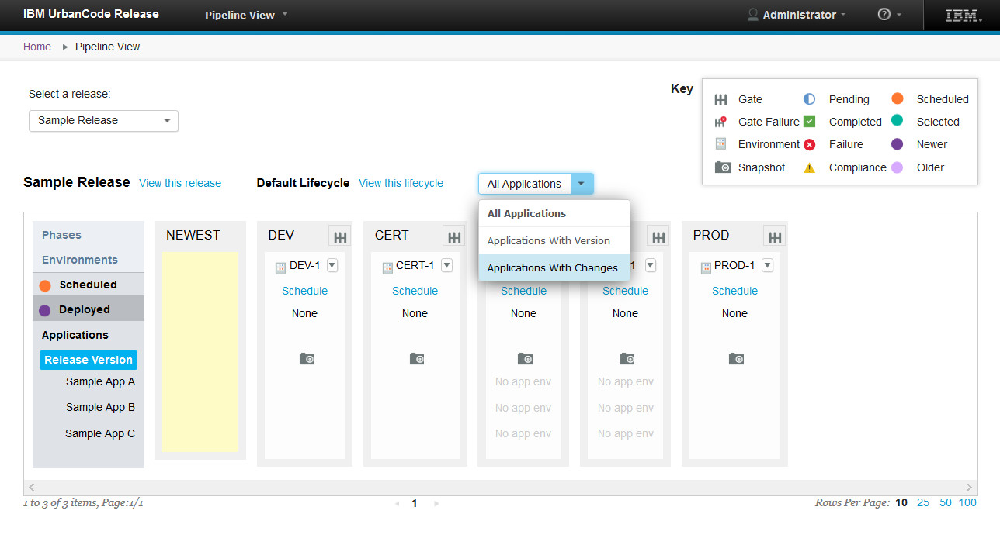
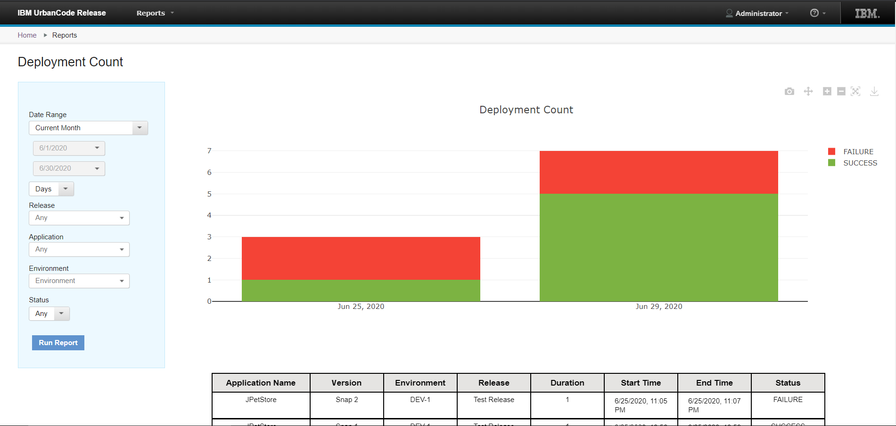

This article was originaly published in 2020.06.30
6.2.4
This release of IBM UrbanCode Release is a maintenance release and includes various bug fixes and enhancements. This release is recommended for all customers.
Sofware updates
This release of UrbanCode Release includes support for upgrading to the following:
Notes:
- Do not use the ODBC driver which comes with the Oracle 19c setup. Download the ODBC driver from the Oracle website and placed it in the
urbancoderelease_directory/lib/ext directory.
- Java 8 is supported for all operating systems except the MAC operating. For the MAC OS only IBM Java 7 is supported.
Application filter on the Pipeline View
You can now filter applications listed on the Pipeline View page. Using the new drop-down menu, you can select to show all application, only those which have versions, or only those which have changes.

Deployment Count Report
The Deployment Count report has been added to allow you gather information about the status of deployment successes and failures. Using the report filters you can narrow or broaden the amount of data collected by date, application, release, environment, and status. Create a Deployment Count Report from the Home page.

Notification scheme for related deployment
The notification scheme can now be set for a Related Deployment event type using plugin_util.jar.